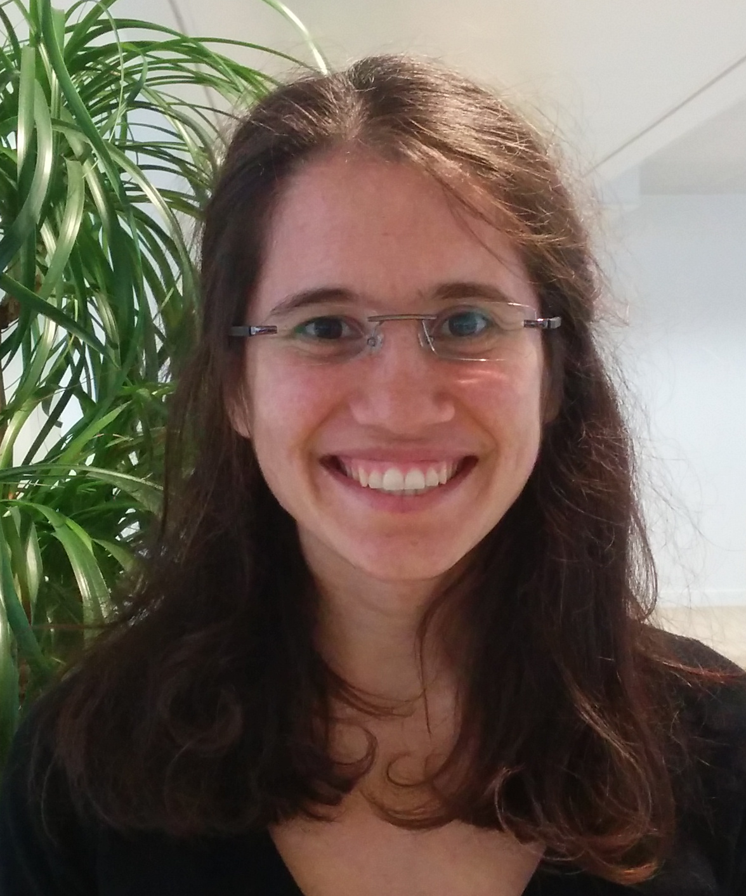

Calypso Herrera
Home
Research and Talks
Teaching
Curriculum
Curriculum

Experience
ETH Zurich - Department of Mathematics
Postdoctoral Researcher
, 2022.
ETH Zurich - Department of Mathematics
Research and Teaching Assistant
, 2016-2022.
Finastra - Sophis
Quantitative Analyst
, team of
Louis Paulot
, 2011-2016.
HSBC - Equities
Quantitative Analyst Intern
, supervisor
Pascal Delanoe
, 2011.
HSBC - Model Review
Quantitative Analyst Intern
, supervisor Sebastien Ray, 2010.
Education
ETH Zurich
-
Stochastic Finance Group
-
Phd
under the supervision of
Prof. Josef Teichmann
2016-2021.
University Paris VI
-
Ecole Polytechnique
-
Master Probability and Finance
2010-2011.
University Paris VI
-
Master Applied Mathematics
2008-2010.
University Paris XI Orsay
-
Bachelor of Fundamentals Mathematics
2005-2008.